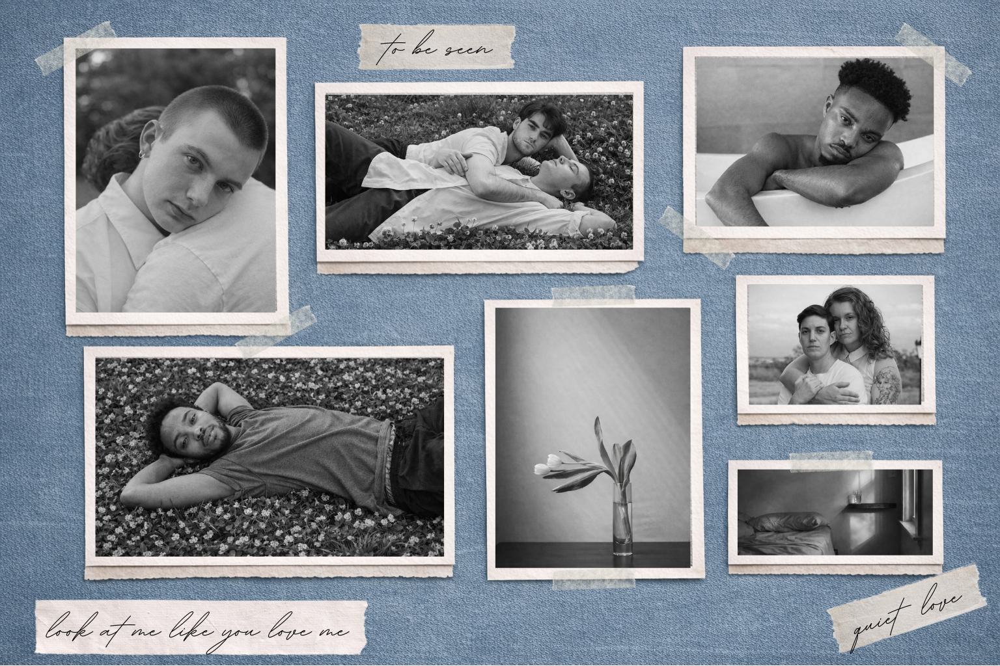

For the website translation of Look at Me Like You Love Me, the content will be curated thematically rather than chronologically, mirroring the book’s emphasis on emotional presence over linear narrative. The site will be structured into several quiet sections that reflect recurring ideas in the work, such as being seen, tenderness, quiet love, domestic intimacy, and stillness. Each section will feature a small collection of photographs presented as individual moments, paired with minimal handwritten text or short phrases drawn from the emotional tone of the book rather than extended captions. Transitional elements such as negative space, muted backgrounds, and subtle visual motifs (paper texture, tape, soft framing) will separate sections and encourage slow, intentional viewing. The homepage will function as an entry point or mood-setting collage, while each thematic section allows the viewer to linger, reflect, and experience the work as an unfolding emotional landscape rather than a traditional gallery or archive.